knitr::include_graphics(
here("_posts/2023-08-26-functions-and-functionals-tidyeval-fun/tidyeval.png"))Tidyeval is a way to use the tidyverse in functions that you can write yourself without resorting to base R, and in functionals (functions like map, map2, and pmap within the {purrr} package).
But tidyeval can be confusing, in part because it is still evolving, and in part because there are often multiple ways to do the same thing.
As a side note, there are many, many, many (possibly too many) ways to use tidyeval, with ensyms and enquos and !! and !!! to evaluate expressions, but these two 3-part approaches get me through the day.
Approach 1 - .data prefix the vars and Quote varnames in vectors
Let’s start with one approach - by writing a function with the .data prefix - the .data prefix is telling R that the in-dataframe variable names that follow in [[double brackets]] come from INSIDE a dataframe. Let’s start with a function named plot, to make a ggplot.
plot <- function(data, x, y){
ggplot(data) + aes(.data[[x]],
.data[[y]]) + geom_jitter()
}Now let’s test this function. Note that we have to QUOTE within-dataframe variable names when you use the .data prefix in the function
plot(penguins, 'bill_length_mm', 'bill_depth_mm')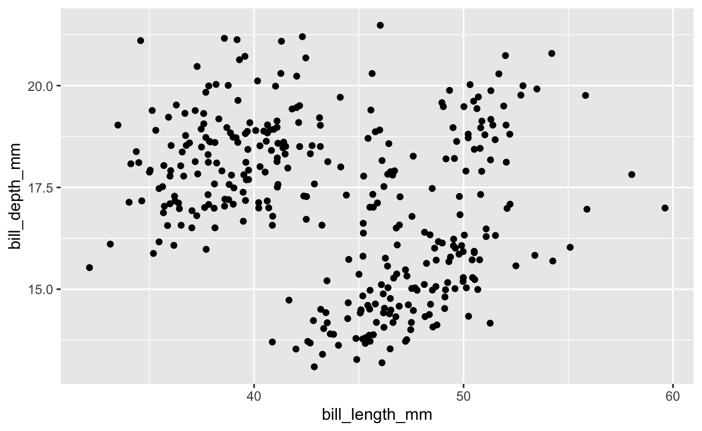
OK, that works fine for a single use. But what if you want to use functionals - the functions from the {purrr} package that let you do this across a vector of inputs in one function call?
Let’s set this up with vectors for multiple x values and multiple y values. Four values for both x and y. And then we will make a dataframe of all possible combinations (16 combos = 4*4) called analysis_list.
xvars <- c('bill_length_mm', 'bill_depth_mm', 'flipper_length_mm',
'body_mass_g')
yvars <- c('sex', 'year', 'island', 'species')
analysis_list <- crossing(xvars, yvars) # all combinations of x and y
xvars[1] "bill_length_mm" "bill_depth_mm" "flipper_length_mm"
[4] "body_mass_g" yvars[1] "sex" "year" "island" "species"analysis_list# A tibble: 16 × 2
xvars yvars
<chr> <chr>
1 bill_depth_mm island
2 bill_depth_mm sex
3 bill_depth_mm species
4 bill_depth_mm year
5 bill_length_mm island
6 bill_length_mm sex
7 bill_length_mm species
8 bill_length_mm year
9 body_mass_g island
10 body_mass_g sex
11 body_mass_g species
12 body_mass_g year
13 flipper_length_mm island
14 flipper_length_mm sex
15 flipper_length_mm species
16 flipper_length_mm year OK, that looks good for our 3 possible inputs to a functional.
Let’s try this out by putting xvars and yvars into the functional, map2.
map2(.x = xvars, .y = yvars, .f = plot, data = penguins, .progress =
TRUE) #single pairs of x, y[[1]]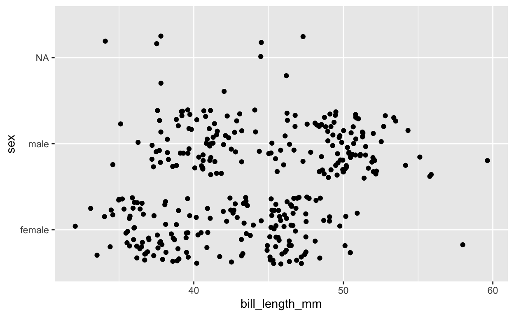
[[2]]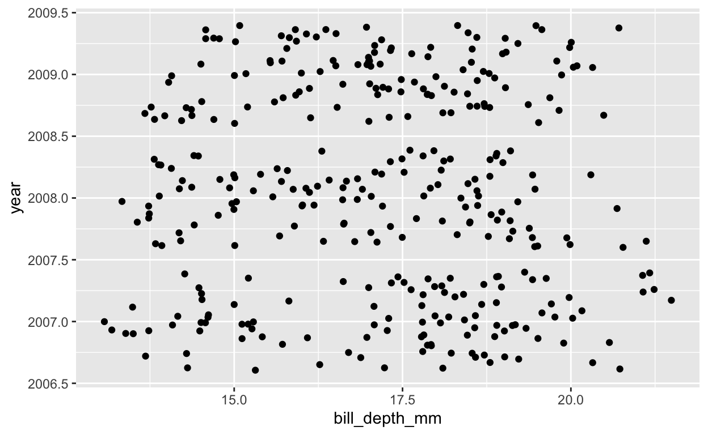
[[3]]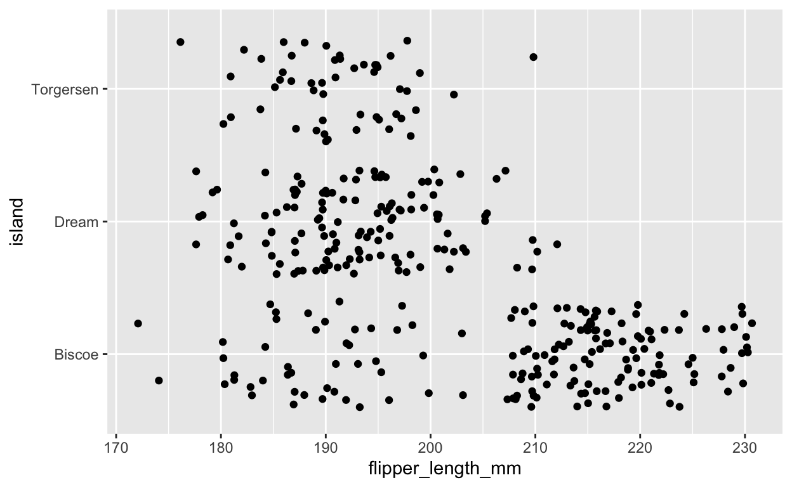
[[4]]OK, that worked, and it paired up each value of xvar with the corresponding value of yvar to make 4 plots.
Now let’s try all possible (16) combinations.
map2(.x =analysis_list$xvars, .y = analysis_list$yvars, .f = plot, data
= penguins, .progress = TRUE) # all combos of x, y[[1]]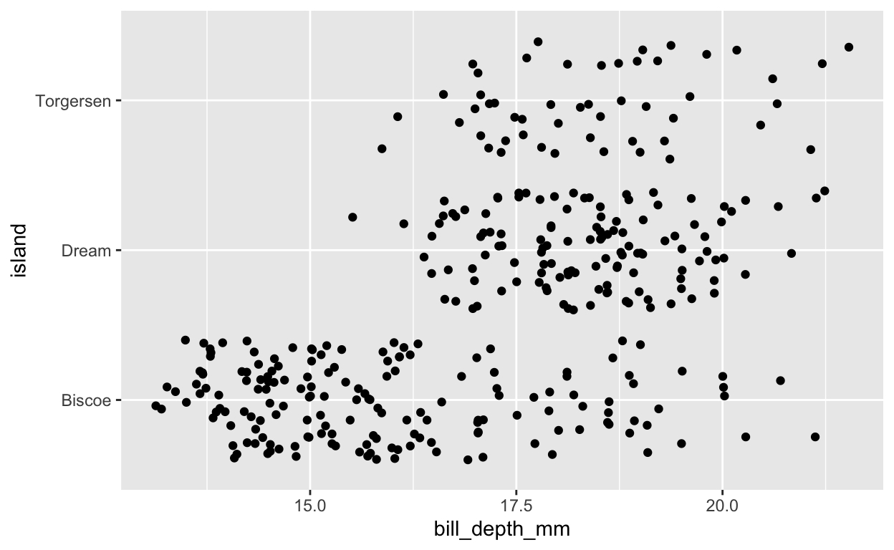
[[2]]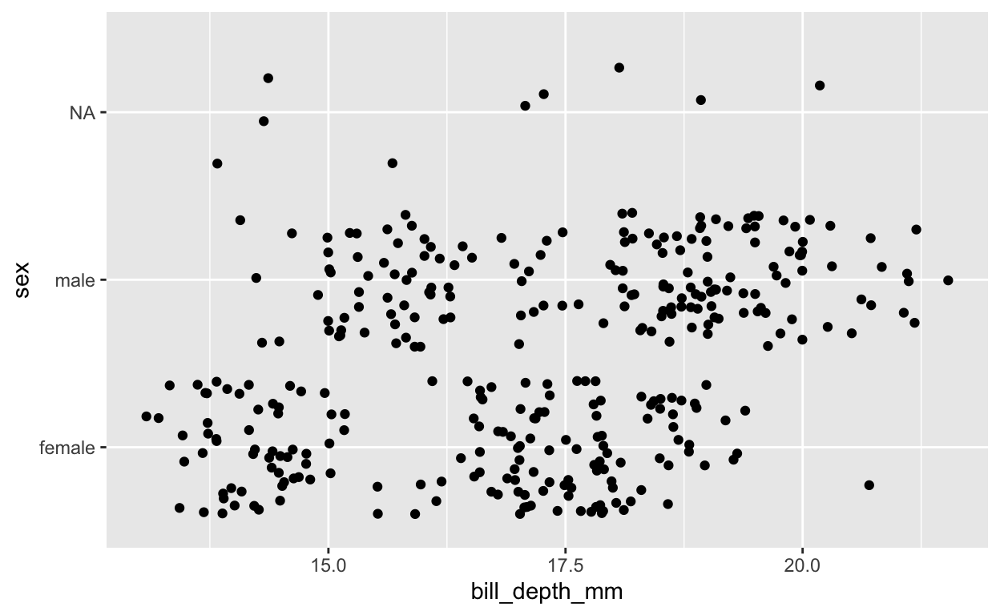
[[3]]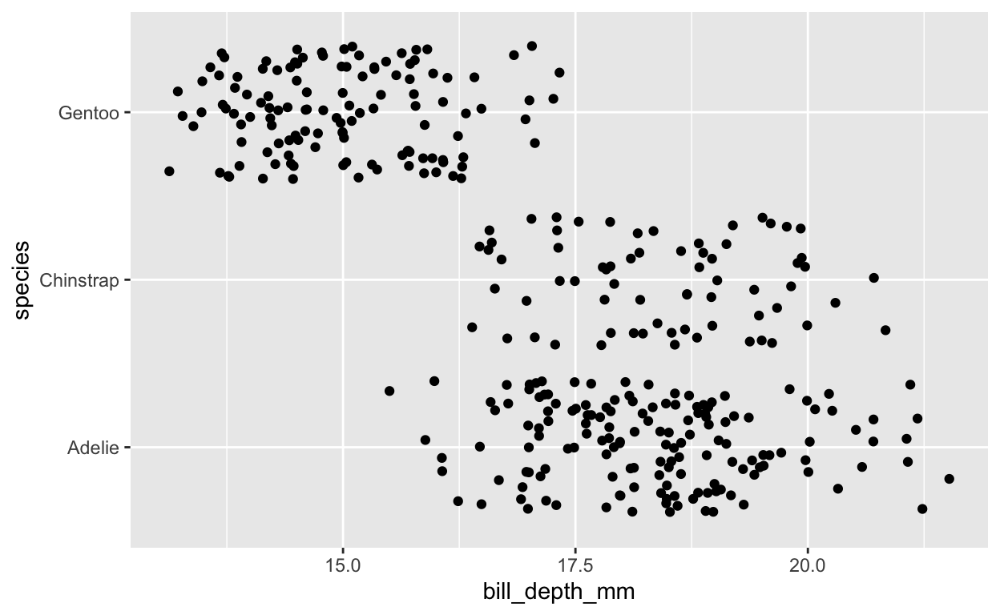
[[4]]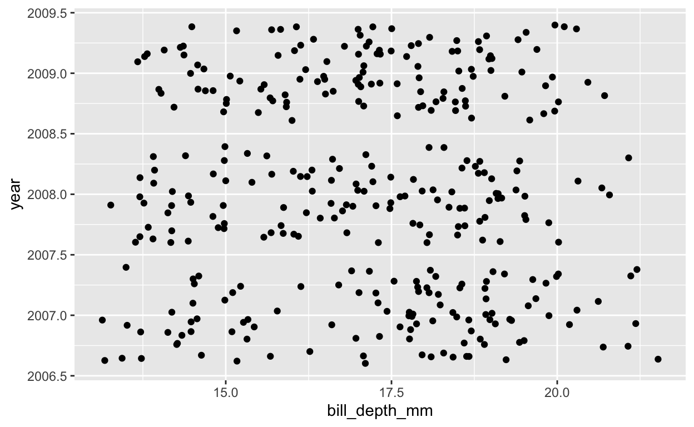
[[5]]
[[6]]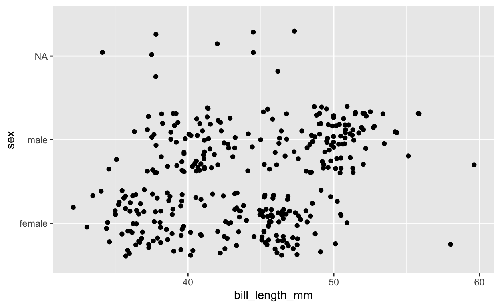
[[7]]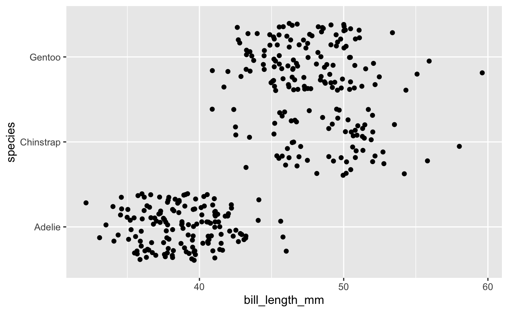
[[8]]
[[9]]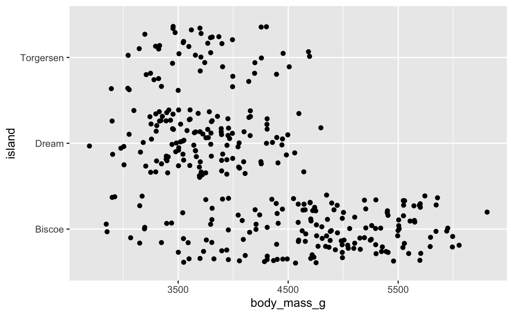
[[10]]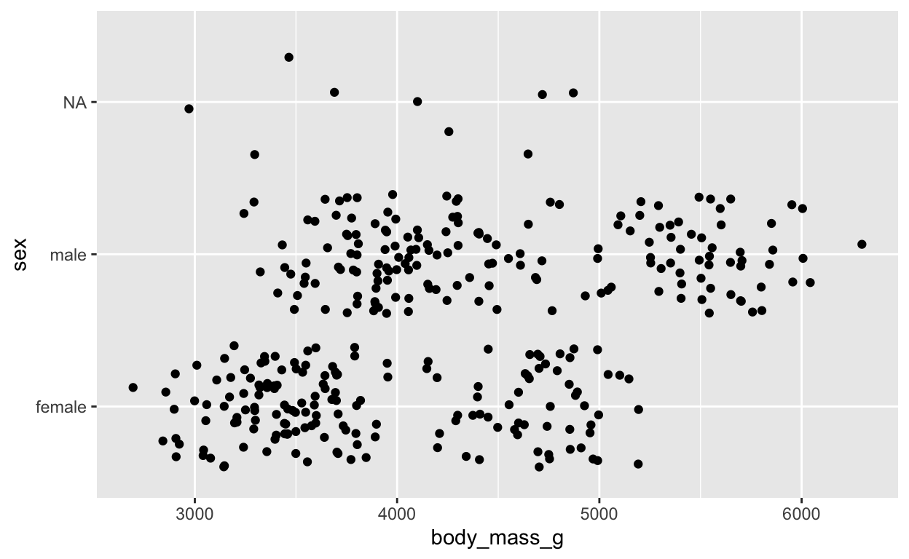
[[11]]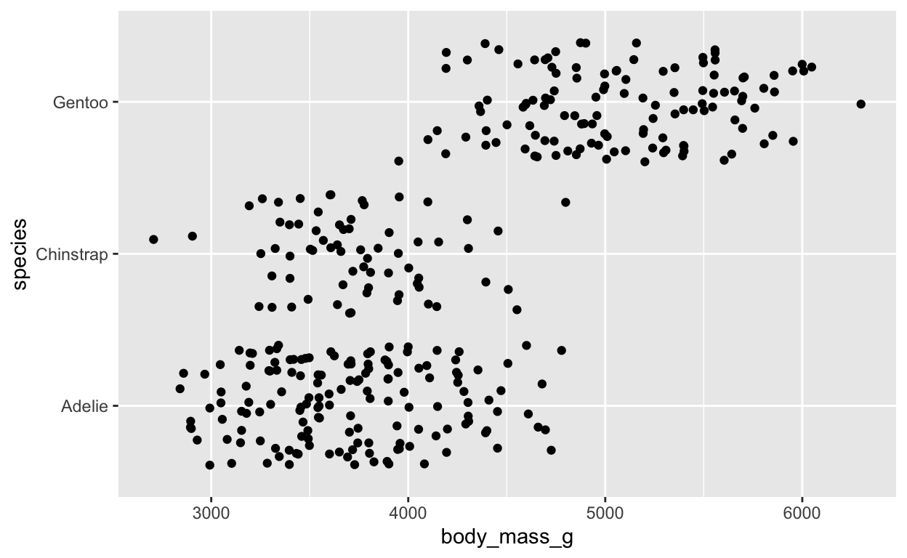
[[12]]
[[13]]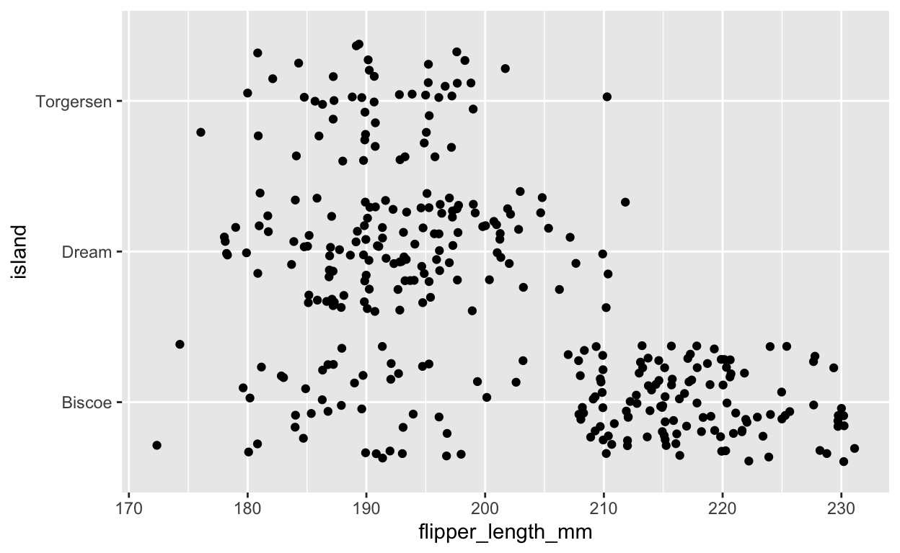
[[14]]
[[15]]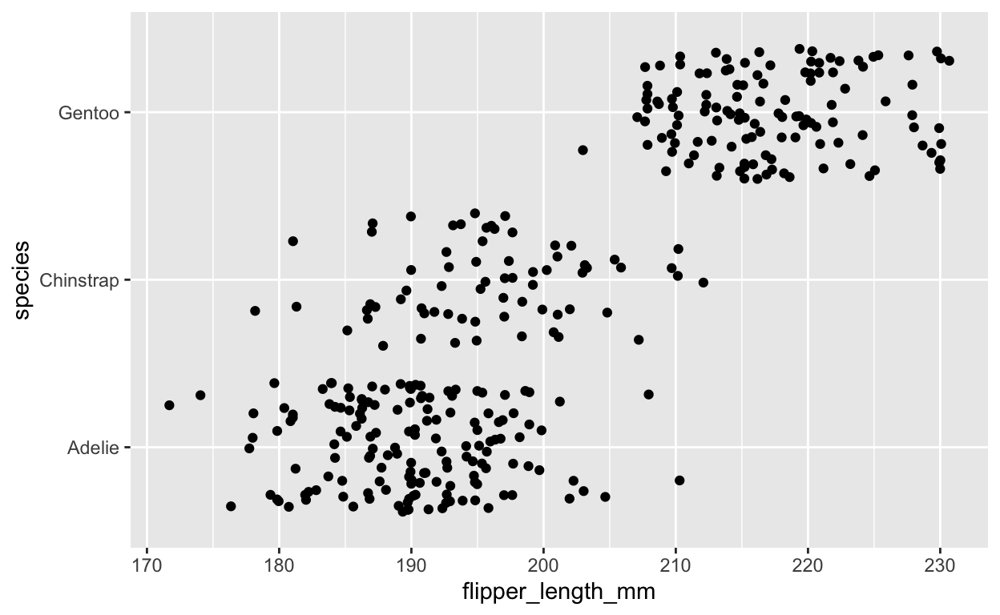
[[16]]This works - we can use the
- .data[[var]] prefix in the function for in-dataframe variable names, and
- quote the variables when we put them into a vector for the functionals to iterate over.
- don’t do anything extra in functionals like map or map2.
Approach 2 - Embrace vars and Syms vectors
NOTE that there is another distinct approach, which does not combine well with the .data prefix.
This is to
- embrace (curly-curly) the {{in-dataframe variable names}} in the function with the {{var}} wrapping, and
- do NOT use any quotes for in-dataframe variable names when using the stand-alone function, and
- turn the unquoted variable names in the vectors input into the functionals into symbols with the syms function.
Let’s see how this works. We will make a new function, plot2, with curly-curly around x and y (the in-dataframe variables), and just for variety, we will use geom_boxplot.
plot2 <- function(data, x, y){
ggplot(data) + aes({{x}}, {{y}}) +
geom_boxplot()
}Let’s test out the stand-alone function (note NO manual QUOTING of variables)
plot2(penguins, bill_length_mm, bill_depth_mm)To reiterate, you do NOT have to quote variable names when using a function made with embrace/curly-curly
But this gets wonky with functionals like map2 - you get wonky plots - it ‘works’ (no error thrown), but the plots are wrong. See below, tested with single pairs of x and y
However, embrace/curly-curly works OK with functionals if you then (within the functional) convert both the xvars and yvars into symbols with the syms function, using single pairs of x and y.


The syms approach also works for the analysis list of all combinations, to give you 16 plots of all combos.
[[1]]
[[2]]
[[3]]
[[4]]
[[5]]
[[6]]
[[7]]
[[8]]
[[9]]
[[10]]
[[11]]
[[12]]
[[13]]
[[14]]
[[15]]
[[16]]Summary
So two approaches to tidyeval can work, but are not mutually compatible
Approach 1
- use the .data[[var]] prefix for each in-dataframe variable name when you build your function
- QUOTE the in-dataframe variables when you use them in the function
- no extras added when you use functionals like map2.
Approach 2
- Wrap each {{in-dataframe variable name}} with curly-curly when you build your function
- NO NEED to quote the in-dataframe variables when you use them in the function
- Then wrap the vectors of in-dataframe variables in the syms function within functionals like map2.
Other Resources
Tidyeval videos https://www.rstudio.com/tags/tidyeval/
Schloss lab Intro to Tidyeval https://github.com/SchlossLab/tidy-eval
Mile McBain Friendly eval interface https://github.com/MilesMcBain/friendlyeval
Bonus Material Fun with Dots and the Walrus and {ggsignif}
A few other useful pieces for tidyeval can be useful at times.
Dots (…)
Imagine you want to add a bit of theming to your plots made with your plot function. But you want to be flexible, and not commit to a permanent, constant theme.
You can add options to your plot function with dots - literally using ... as an argument to the function, like this:
plot3 <- function(data, x, y, ...){
ggplot(data) + aes({{x}}, {{y}}) +
geom_boxplot() +
theme_minimal(...)
}You can see how we have left room for function arguments to theme_minimal, but we have not committed to anything specific. Also notice that we don’t have to worry about .data or curly-curly. The dots take care of themselves. Let’s try it out.
# Note font needs to be on your computer already (in Applications/Font Book on Mac)
plot3 (penguins,
bill_length_mm, island,
base_size = 22,
base_family = "Alex Brush")The Walrus Operator
One oddity of R is that is struggles with renaming things on the left hand side of equations within functions. As a workaround, the ‘walrus operator’ was invented. This looks a little bit like the face of a walrus turned to the side (:=). This operator handles mutate functions that require setting new names equal to new things within functions that require tidyeval.
Let’s try this out with a sorted barplot function.
We will mutate the categorical variable to a factor, then sort it by frequency before we plot this.
BUT because of the use of mutate INSIDE a function, we need to change the assignment = sign to a walrus operator :=. Easy to forget. But anytime you are assigning a variable with curly-curly inside a function, watch your walruses!
sorted_barplot <- function(data, var){
data |>
mutate({{var}} := factor({{var}}) |>
fct_infreq()) |>
ggplot() +
geom_bar(aes(y = {{var}}),
fill = 'dodgerblue4') +
theme_minimal(base_size = 18,
base_family = "Colonna MT")
}
sorted_barplot(penguins, species)Programmatically adjusting Titles and Axis Labels, and adjusting {ggsignif} comparison bars on the fly
When you generate multiple plots, it is nice to have the title and axis labels programmatically adapt to the data used. We can do this with variables, as in the example shown below.
There is also an issue with geom_signif, as it does not have a programmatic way to adjust bar height to your data. The default is that the bars will tend to be in the same place and overlap with each other. But it needs to measure the max value in your dataset in order to adjust. A way to do this programmatically in a function is below.
This adaptive function will adjust p value bar height, title, and x axis label
plot_cats <- function(data, catvar, contvar){
mv <- transmute(data,
max := max({{contvar}},na.rm = TRUE)) |> pull(max)
# mv is needed to adjust bar height later
data |>
ggplot() +
aes(x = {{contvar}}, y = factor({{catvar}}),
fill=factor({{catvar}})) +
geom_boxplot() +
geom_jitter(width = 0.6) +
geom_signif(comparisons = list(c(1,2))) +
geom_signif(comparisons = list(c(1,3)),
y_position = 1.1 * mv) +
geom_signif(comparisons = list(c(2,3)),
y_position = 1.2 * mv) +
theme_bw() +
theme(legend.position = "none",
panel.grid.major.x = element_blank()) +
labs(y = "",
x = glue("Measurement of {ensym(contvar)}"),
title = glue("Comparison of {ensym(contvar)} \nAcross {ensym(catvar)} categories" ))
}Test this function out with a single plot
plot_cats(penguins,
catvar = island,
contvar = bill_length_mm)Now make vector lists of catvars and contvars
Now plot the 3 pairs - works find with syms though it seems like contvars should be .x and catvars should be .y - but this version works
[[1]]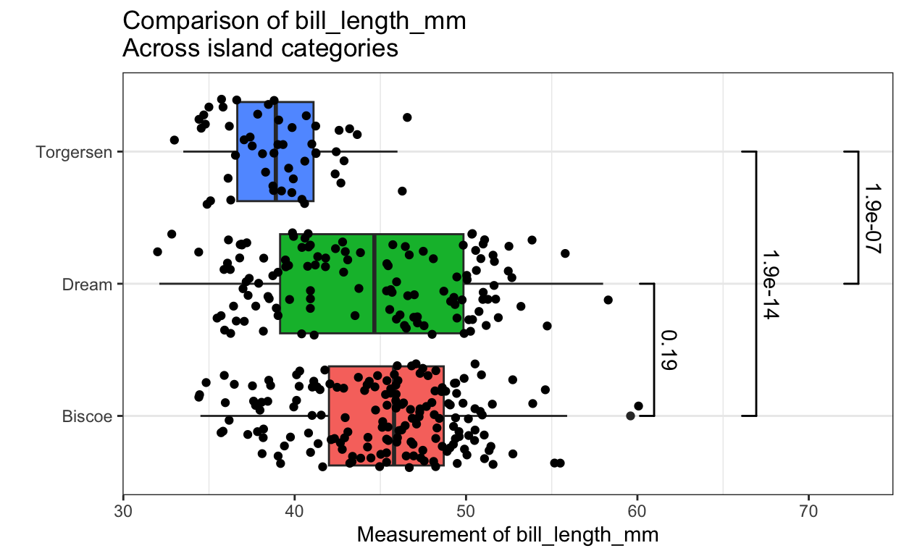
[[2]]
[[3]]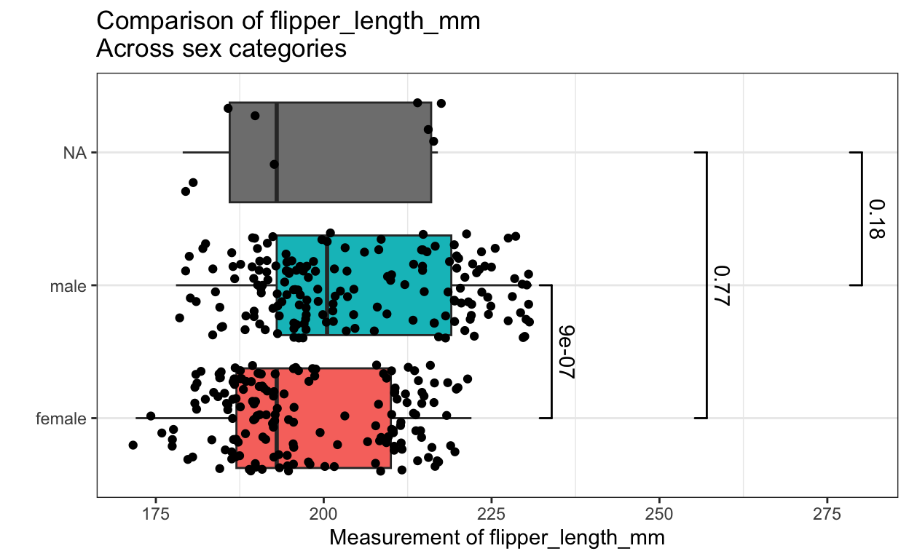
Note this does the 3 pairs of catvars with contvars. To do all (9) combinations, let’s set that up with an anaysis_list dataframe of all combos
analysis_list <- crossing(catvars, contvars)
analysis_list# A tibble: 9 × 2
catvars contvars
<chr> <chr>
1 island bill_length_mm
2 island body_mass_g
3 island flipper_length_mm
4 sex bill_length_mm
5 sex body_mass_g
6 sex flipper_length_mm
7 species bill_length_mm
8 species body_mass_g
9 species flipper_length_mmNow for all possible (9) combinations
map2(.x = syms(analysis_list$catvars),
.y = syms(analysis_list$contvars),
.f = plot_cats,
data = penguins) [[1]]
[[2]]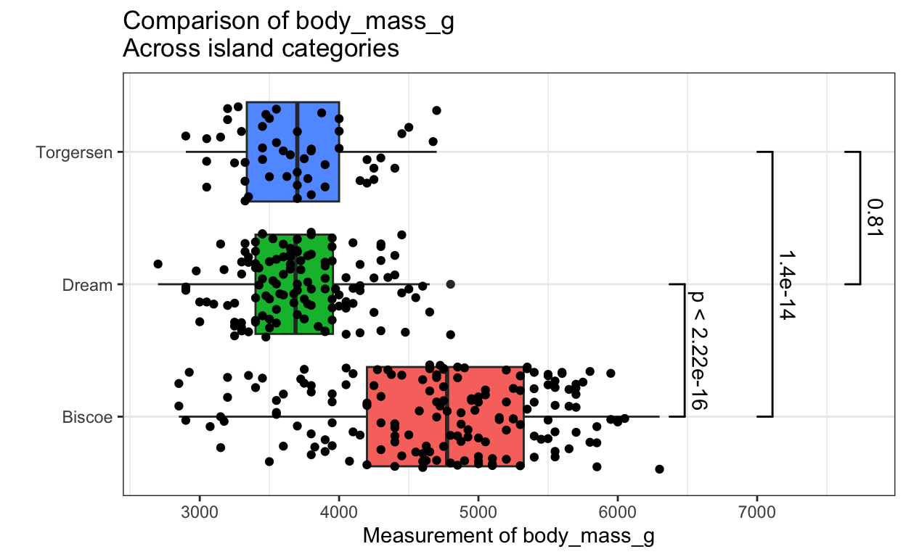
[[3]]
[[4]]
[[5]]
[[6]]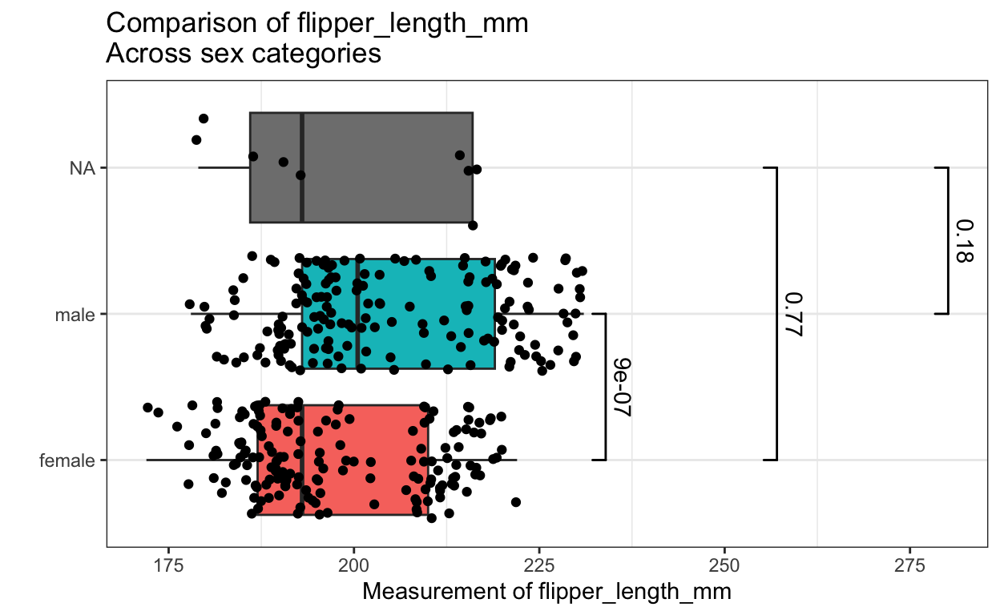
[[7]]
[[8]]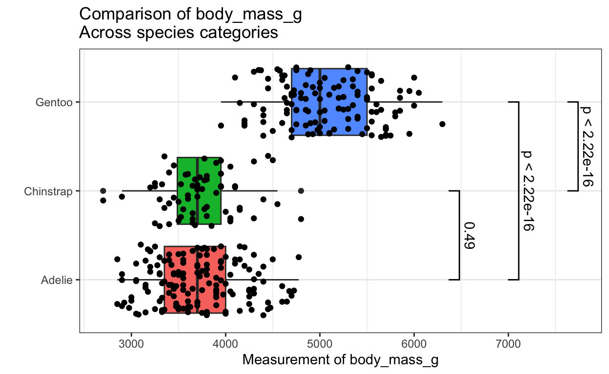
[[9]]